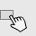
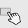

100%
CAMBIANDO EL ESTADO DE LAS VARIABLES
ACTIVIDAD 3
Para seleccionar la opcion de respueta, haga clic sobre la casilla.
 Tenemos un ejercicio práctico para ti, haz click en el botón ACTIVIDAD.
ACTIVIDAD
CAMBIANDO EL ESTADO DE LAS VARIABLES
ACTIVIDAD 3
Para seleccionar la opcion de respueta, haga clic sobre la casilla.
